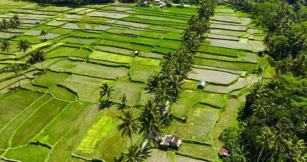
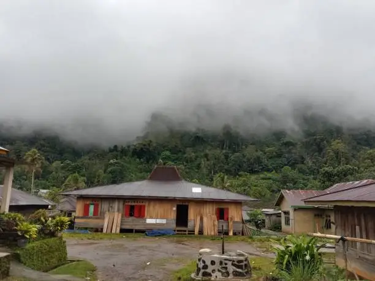
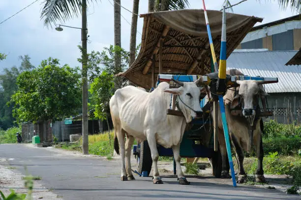

Galeri





Desa Karangrau adalah desa menakjubkan dan masyarakat yang ramah.
Lihat Peta DesaMenjadikan Desa Karangrau sebagai desa yang berkembang, mandiri, dan makmur, dengan semangat gotong royong, pelestarian budaya lokal, serta keseimbangan lingkungan yang berkelanjutan.
Desa Karangrau berada di lereng gunung, dikelilingi pemandangan alam yang menawan dan udara yang sejuk. Dengan luas wilayah sekitar 1000 hektar, mayoritas penduduk desa ini menggantungkan hidupnya sebagai petani
Untuk informasi lebih lanjut, silakan hubungi kami melalui kontak di bawah ini:
Jl. Sultan Agung Karangrau
+62 123 456 789
info@desaku-karangrau.id